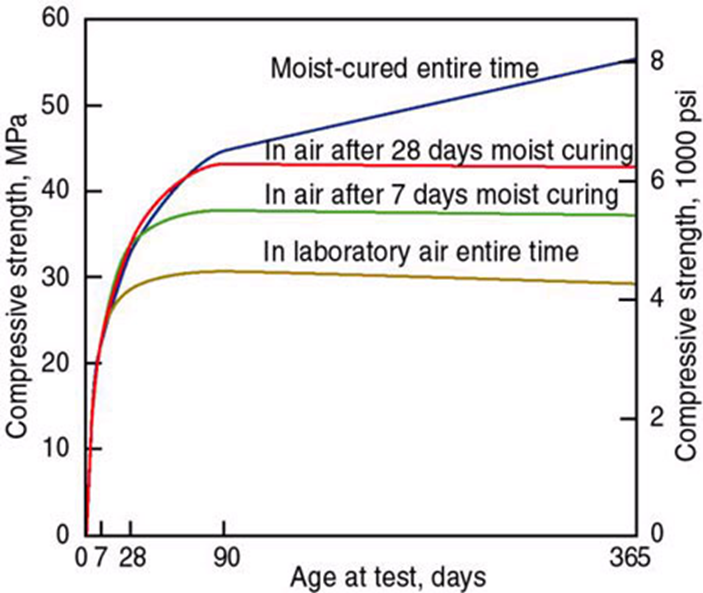
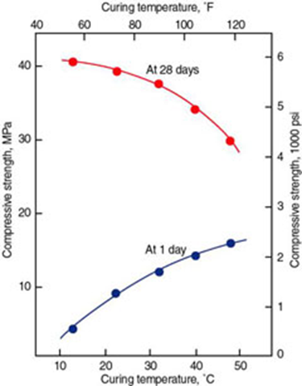

عمل آوری بتن (کیورینگ بتن)؛ انواع و نکات مهم
عمل آوری بتن (کیورینگ بتن)؛ انواع و نکات مهم
عمل آوری بتن نقش مهمی در توسعه مقاومت و دوام بتن دارد. عمل آوری بلافاصله پس از قرار دادن و اتمام بتن انجام می شود و شامل حفظ شرایط رطوبت و درجه حرارت مطلوب، هم در عمق و هم در نزدیکی سطح ، برای مدت زمان طولانی است. بتنی که به طور صحیح عمل آوری (کیورینگ) شده باشد برای ادامه هیدراتاسیون و توسعه مقاومت، پایداری حجم، مقاومت در برابر یخ زدن و ذوب شدن (سیکل ذوب و یخ) و مقاومت در برابر سایش و پوسته شدن، مقدار کافی رطوبت دارد.
طول زمان عمب آوری بتن کافی به عوامل زیر بستگی دارد:
- نسبت های مخلوط
- مقاومت مشخصه
- اندازه و شکل مقطع بتنی
- شرایط آب و هوایی محیطی
- شرایط در معرض قرارگیری آینده مقطع بتن
دال های بتنی غیر سازه ای قرارگرفته روی زمین (به عنوان مثال پیاده روها، پیاده روها، پارکینگ ها، مسیرهای عبور، کف سازی ها، لاینینگ کانال ها و ...) و بتن های سازه ای (به عنوان مثال عرشه های پل، پایه ها، ستون ها، تیرها، دال ها، پایه های کوچک، دیوارهای پیش ساخته، دیوارهای حائل و ...) حداقل دوره عمل آوری (کیورینگ) هفت روز برای دمای محیط بالاتر از 40 درجه فارنهایت (5 درجه ساننتیگراد) نیاز دارند.
کمیته ACI 301 (انجمن بتن امریکا) حداقل دوره عمل آوری مربوط به کسب 70 درصد مقاومت فشاری مشخصه را توصیه می کند. عمل آوری هفت روزه که معمولاً توصیه می گردد، معمولاً مربوط به دستیابی تقریبی به 70 درصد مقاومت فشاری مشخصه است. وقتی عمل آوری بتن در دمای بالاتر انجام می گردد و یا از ترکیبات خاص سیمان / مواد افزودنی در بتن استفاده می گردد ، می توان به سطح مقاومت 70 درصدی در زمان زودتری رسید. به همین ترتیب ، ممکن است برای ترکیبات مختلف مواد افزودنی یا سیمان و یا دمای عمل آوری پایین تر به زمان طولانی تری جهت دستیابی به 70 درصد مقاومت مشخصه نیاز باشد. به همین دلیل ، کمیته ACI 308 حداقل دوره های عمل آوری (کیورینگ بتن) زیر را توصیه می کند:
- سیمان ASTM C 150 نوع I: هفت روز
- سیمان ASTM C 150 نوع II: ده روز
- سیمان ASTM C 150 نوع III: سه روز
- سیمان ASTM C 150 نوع IV یا V : 14 روز
- سیمان های ASTM C 595 ، C 845 ، C 1157 : متغییر
اثر مدت زمان کیورینگ در توسعه مقاومت فشاری در شکل 1 ارائه شده است:

شکل 1. زمان عمل آوری مرطوب و افزایش مقاومت فشاری
دمای بالاتر عمل اوری بتن باعث افزایش مقاومت اولیه در بتن می شود اما ممکن است مقاومت 28 روزه آن را کاهش دهد. اثر دمای عمل آوری بر توسعه مقاومت فشاری بتن در شکل 2 ارائه شده است:

شکل 2. تأثیر دمای عمل آوری بر مقاومت فشاری بتن
سه عملکرد اصلی برای عمل آوری وجود دارد:
1) حفظ آب اختلاط در بتن در طی مراحل اولیه سخت شدن
حوضچه و غوطه وری
از حوضچه غوطه وری به طور معمول برای بهبود سطوح صاف در کارهای کوچکتر استفاده می شود. باید مراقبت بود تا دمای آب عمل آوری بیش از 20 درجه فارنهایت خنک تر از بتن نباشد، تا از ترک خوردگی ناشی از تنش های گرمایی جلوگیری شود. غوطه وری عمدتا در آزمایشگاه برای کیورینگ نمونه های آزمایش بتن استفاده می شود.
اسپری و مه پاشی
از اسپری و مه پاشی زمانی استفاده می شود که دمای محیط بسیار بالاتر از یخبندان باشد و رطوبت کم باشد. مه پاشی می تواند ترک خوردگی جمع شدگی پلاستیک را تا رسیدن بتن به گیرش نهایی، به حداقل برساند.
پوشش های مرطوب اشباع شده
پس از سفت شدن بتن برای جلوگیری از آسیب سطح، باید از پوشش های مرطوب اشباع شده از آب استفاده شود. آنها باید به طور مداوم مرطوب نگه داشته شوند.
قالب های در محل باقی مانده
قالب های باقی مانده جای خود معمولاً محافظت رضایت بخشی در برابر از دست دادن رطوبت برای سطوح بتنی ایجاد می کنند. قالب ها معمولاً تا زمانی که برنامه ساخت و ساز اجازه می دهد در جای خود باقی می مانند. اگر قالب ها از چوب ساخته شده اند، باید به خصوص در هوای گرم و خشک، مرطوب نگه داشته شوند.
2) کاهش تلفات آب مخلوط از سطح بتن
پوشش بتن با کاغذ یا ورق های پلاستیکی غیر قابل نفوذ
کاغذ و ورق های پلاستیکی غیرقابل نفوذ را می توان روی بتن کاملاً مرطوب اعمال کرد. سطح بتن باید به اندازه کافی سخت باشد تا از آسیب سطح ناشی از فعالیت های قرارگیری جلوگیری کند.
استفاده از ترکیبات درمانی غشایی ساز
از ترکیبات کیورینگ غشایی برای تاخیر یا کاهش تبخیر رطوبت بتن استفاده می شود. آنها می توانند حاوی رنگدانه منعکس کننده نور خورشید یا سفید باشند. ترکیبات رنگدانه سفید برای شرایط آب و هوایی گرم و آفتابی توصیه می شود تا تابش خورشید را منعکس کند. ترکیبات کیورینگ غشایی باید بلافاصله پس از اتمام نهایی استفاده شوند. کیورینگ های غشایی باید مطابق با استانداردهای ASTM C3094 یا ASTM C13155 باشند.
3) تسریع در کسب مقاومت با استفاده از گرما و رطوبت اضافی
بخار زنده
بخار زنده در فشار اتمسفر و بخار فشار بالا در اتوکلاو دو روش کیورینگ بخار هستند. دمای بخار برای بخار زنده در فشار اتمسفر باید تا حدود 140 درجه فارنهایت (60 درجه سانتیگراد) یا کمتر حفظ شود تا مقاومت بتن مورد نظر حاصل شود.
کویل های گرمایشی
کویل های گرمایشی معمولاً به عنوان عناصر جاسازی شده نزدیک سطح عناصر بتنی استفاده می شوند. هدف آنها محافظت از یخ زدگی بتن در هنگام بتن ریزی هوای سرد است.
قالب ها یا پدهای گرم شده برقی
قالب ها یا پد های گرم شده برقی در درجه اول توسط تولید کنندگان بتن پیش ساخته استفاده می شود.
پتوهای بتنی
از پتوهای عایق بتنی برای پوشاندن و عایق بندی سطوح بتنی که در طی دوره کیورینگ، تحت درجه حرارت انجماد قرار دارند، استفاده می شود. بتن باید به اندازه کافی سخت باشد تا از آسیب سطح هنگام پوشاندن با پتو بتن جلوگیری کند.
انواع دیگر کیورینگ شامل کیورینگ رطوبت داخلی با سنگدانه های سبک یا ذرات پلیمر جاذب است. برای عناصر بتنی جرمی (معمولاً ضخیم تر از 3 فوت) ، معمولاً یک طرح کنترل حرارتی برای کمک به کنترل تنش های گرمایی تهیه می شود. اطلاعات بیشتر را می توان در گزارش راهنمای کیورینگ بتن از کمیته ACI 308 یافت. برای بتن های خاص ، توصیه می شود به سایر گزارشات ACI به شرح زیر مراجعه کنید:
بتن نسوز ACI 547.1R
بتن عایق ACI 523.1R
بتن سیمان انبساطی ACI 223
بتن غلتکی ACI 207.5R
بتن معماری ACI 303R
شاتکریت ACI 506.2
بتن تقویت شده با الیاف ACI 544.3R
سازه های لغزش عمودی ACI 313
کیورینگ در هوای سرد یا گرم نیاز به توجه بیشتری دارد. در هوای سرد ، برخی از اقدامات شامل محفظه های گرم شده ، کاهنده های تبخیر، کیورینگ هتا و پتوهای عایق است. دمای بتن تازه باید بالاتر از 50 درجه فارنهایت (10 درجه سانتیگراد) باشد. دوره عمل آوری در هوای سرد به دلیل کاهش سرعت کسب مقاومت، بیشتر از دوره استاندارد است. انتظار می رود مقاومت فشاری بتن که در 50 درجه فارنهایت عمل آوری و نگهداری می شود، نیمی از سرعتی که بتن در 73 درجه فارنهایت (تقریبا 23 درجه سانتیگراد) دارد، باشد. در هوای گرم ، به دلیل از دست دادن سریع رطوبت از بتن تازه ، عمل آوری و محافظت بسیار مهم است. عمل آوری در واقع قبل از قرار دادن بتن با مرطوب کردن سطوح بستر با آب آغاز می شود. برای قرار دادن بتن در هوای گرم می توان از ضد آفتاب، ضد باد، مه ساز و بازدارنده های تبخیر استفاده کرد. از آنجا که افزایش مقاومت بتن در هوای گرم سریعتر است ، ممکن است دوره کیورینگ کاهش یابد. اطلاعات بیشتر را می توان در ACI 306.1 ، مشخصات استاندارد برای بتن ریزی برای آب و هوای سرد ، ACI 306R ، بتن ریزی در آب و هوای سرد ، ACI 305.1 ، مشخصات برای بتن ریزی با آب و هوای گرم و ACI 305R ، بتن ریزی در آب و هوای گرم یافت.
عمل آوری نمونه های آزمایشی بتن
عمل آوری نمونه های آزمایش بتن معمولاً با بتنی که در حین ساخت قرار داده شده متفاوت است. انجمن آمریکایی آزمایش و مواد (ASTM) دو استاندارد برای ساخت و پخت نمونه های بتنی ایجاد کرده است. ASTM C1926 برای نمونه های آزمایشگاهی در حالی که ASTM C317 برای نمونه های صحرایی در نظر گرفته شده است. هر دو سند به ترتیب الزامات استانداردی را برای ساخت ، عمل آوری، محافظت و حمل نمونه های آزمایش بتن به ترتیب تحت شرایط صحرایی یا آزمایشگاهی ارائه می دهند.
ASTM C192 روش هایی را برای ارزیابی مخلوط های مختلف در شرایط آزمایشگاهی فراهم می کند. معمولاً در مرحله اولیه پروژه یا برای اهداف تحقیقاتی مورد استفاده قرار می گیرد.
ASTM C31 برای تست پذیرش نمونه های بتن استفاده می شود و همچنین می تواند به عنوان یک ابزار تصمیم گیری برای حذف مدت زمانی که بتن باید در قالب باشد مورد استفاده قرار گیرد. بسته به هدف مورد نظر، استاندارد دو رژیم عمل آوری را تعریف می کند: عمل آوری استاندارد برای آزمایش پذیرش نمونه بتن و عمل آوری درست برای زمان قالب برداری. تغییر در عمل آوری استاندارد نمونه های آزمایشی می تواند به طور چشمگیری بر خصوصیات بتن نمونه برداری شده تأثیر بگذارد. طبق انجمن ملی بتن آماده (NRMCA) ، مقاومت بتن عمل آوری شد در هوا برای مدت یک روز و پس از آن 27 روز با رطوبت مرطوب، تقریباً 8 درصد کمتر از بتن عمل آوری مرطوب برای کل دوره است. کاهش مقاومت به ترتیب 11 و 18 درصد برای نمونه های بتنی است که در عمر اولیهبه مدت سه روز و هفت روز در هوا کیورینگ می شوند. برای همان ترکیبات کیورینگ هوا / رطوبت ، اما دمای کیورینگ هوای 100 درجه فارنهایت (تقریبا 38 درجه سانتیگراد)، مقاومت 28 روزه برای 1، 3 و هفت روز کیورینگ در این هوا به ترتیب تقریباً 11 درصد ، 22 درصد و 26 درصد کمتر خواهد بود.
محصولات مرتبط استرامیکس (شرکت بسپار بتن ایرانیان هوشمند):
Strucure SW50: کیورینگ بتن (عمل آورنده بتن) بر پایه آب
Strucure LATA: کیورینگ بتن (عمل آورنده بتن) بر پایه لاتکس اصلاح شده محلول در آب
بهترین مطالب هر ما
ارسال میشه به صندوق پستی شما!
این بالا کلیک کن و ایمیلت رو بنویس
ثبت